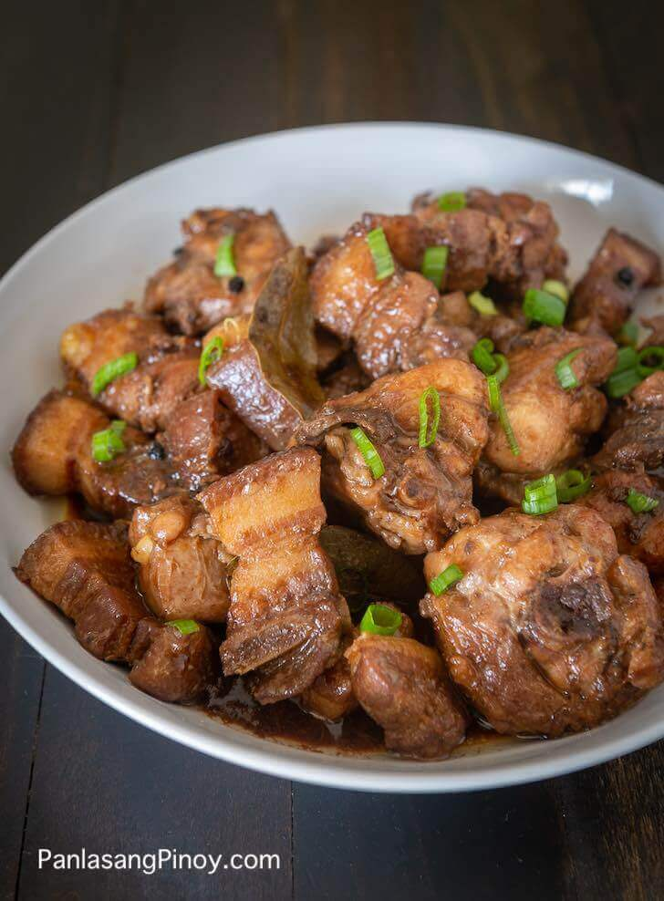

Chicken Pork Adobo

Filipino Chicken Pork Adobo Recipe
Pork and Chicken Adobo is a version of Filipino adobo using the combination of chicken and pork. Adobo is considered as the signature dish of the Philippines. Almost all meat, seafood, and vegetables can be cooked using the inadobo method.
Preparation: 10 minutes Cooking Time: 1 hour
Total Time: 1 hour and 10 minutes
Ingredients
- 1 1/2 lbs pork belly chopped
- 1 1/2 lbs chicken cut to serving pieces
- 4 pieces dried bay leaves
- 2 teasppoons whole peppercorn
- 1 head garlic slightly crushed
- 6 tablespoons white vinegar
- 1/2 cup soy sauce
- 1 tablespoon oyster sauce
- 2 teaspoons brown sugar
- 2 cups water
- Salt to taste
- 3 tablespoons cooking Original
Instructions:
- Heat oil in a pan
- Once the oil becomes hot, add the garlic. Cook until the color turns golden
- Remove the garlic and set aside. Add pork and chicken. Cook for 5 minutes or until the color turns light brown.
- Add whole peppercorn, bay leaves, oyster sauce and water. Let boil and simmer until meat gets tender.
- add the brown sugar and stir (or use 8oz sprite/coke)
- Pour-in vinegar and let boil. Simmer until most of the liquid evaporates.
- Add salt to taste. Pun-in the fried garlic, stir and cook for 2~5 minutes
- Serve hot. Share and Enjoy!
Back to Top
Index Page
Note:
Original Recipe and Instructions are taken from: panlasangpinoy website